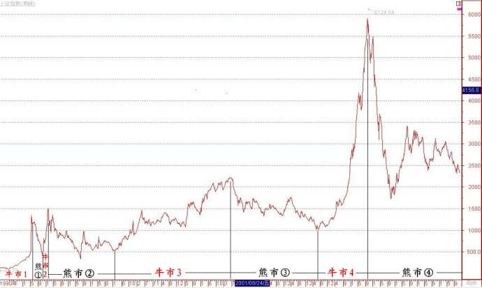
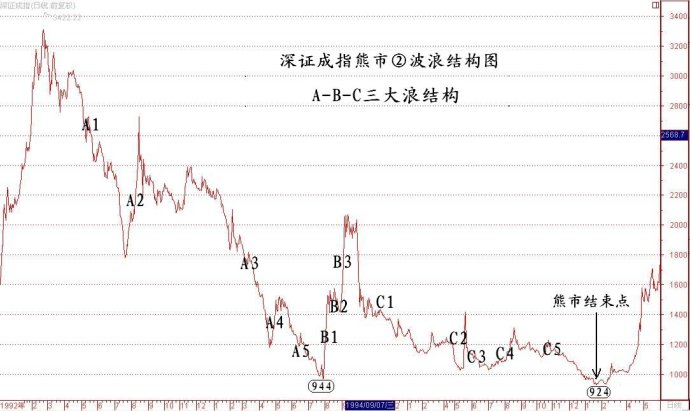

第75篇•教你炒股系列5：沪深股市运行特点（2）
谷为陵
2、沪深股市运行特征就是暴涨暴跌
沪深股市自开设以来，已经过了21年。在这21年里，股市涨跌交替，个股风起云涌，各路诸侯也是你方唱罢我登场，好不热闹。若透过股市令人眼花缭乱的短期波动，将眼光放得长远一些来观察股市，就可以看出这21年来，沪深股市运行的本质特征就是暴涨暴跌。
以上证指数为例，从大周期来看，沪深股市21年来经历了四轮完整的牛熊大循环，如下图所示：

（1）第一轮牛熊：持续时间1.5年
牛市：1991年5月～1992年5月，涨幅1300%。
熊市：1992年5月～1992年11月，跌幅73%。
（2）第二轮牛熊：持续时间1.5年
牛市：1992年11月～1993年2月，涨幅300%。
熊市：1993年2月～ 1994年7月 ，跌幅79%。
（3）第三轮牛熊：持续时间8.5年
牛市：1996年1月～2001年6月，涨幅300%。
熊市：2001年6月～ 2005年7月 ，跌幅56%。
（4）第四轮牛熊：持续时间已超6年
牛市：2005年7月～2007年10月，涨幅500%。
熊市第一浪：2007年10月～2008年11月，跌幅73%。
熊市还在持续。
在划分上证指数的牛熊方面，有个问题有些争议，那就是第三轮牛市（上图中的“牛市3”）的起始时间，是应该从1994年7月底的最低点325.89点开始呢，还是应从1996年1月份的最低点512.83点算起呢？
若只看上证指数，那么，按照波浪理论的划分原则，一轮下跌浪的最低点就是熊市结束的时点，也是新的牛市开始的起点。从上证指数看，熊市②的最低点应该在1994年7月底的325.89点，那么，这个点位就应该是该轮熊市结束的点位，我为什么不选择该点作为该轮熊市结束的点位，而要选择并非该轮熊市最低点的1996年1月份的512.83点呢？
这个问题应该展开来看。在大牛市和大熊市的划分上，我其实是很忠实于波浪理论的。对于股市波浪的划分有一个复杂的情况，那就是股市除了有一个波浪理论，还有一个相互印证理论。
什么是相互印证理论？该理论认为，同一个国家或者地区的不同股票指数的走势具有趋同性，这些不同指数倾向于按照同样趋势运行，且能够同时创出新低或者新高。相互印证理论是判断股市牛熊转折点的一个极其有效的方法，它的引申意义是，“底看弱，顶看强”。这是什么意思？所谓“底看弱”，就是在判断熊市是否见底的时候，要看表现最弱的那个指数是否见底，比如，如果上证指数见底了，而深圳指数还在跌，那么，股市就没有见底，要直到深圳指数也见底了，股市才算见底。所谓“顶看强”，就是在判断牛市是否见顶的时候，要看表现最强的那个指数是否见顶，比如，若上证指数涨不动了，而深圳指数还在涨，那么，牛市还没有完结，要是深圳指数也涨不动了，牛市就算完了。
所以，按照相互印证理论划分股市熊市，上图中的“牛市3”就应该是从1996年1月份的最低点512.83点算起，因为在这个时候，深证成指刚刚创出了熊市②以来的最低点。如下图所示：
